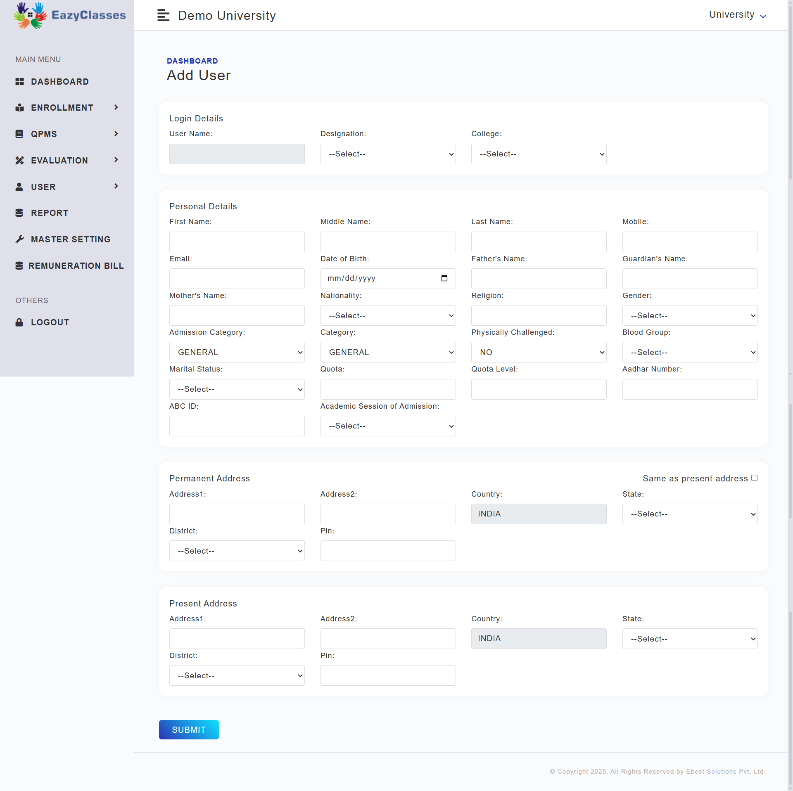
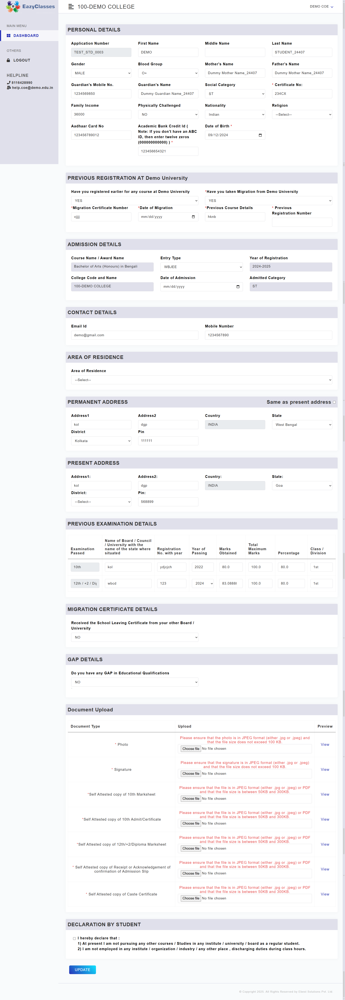

Search Student Section

Navigate to the Students List dashboard from the user menu. This section serves as the central hub for managing student records.
"Students List" Dashboard

The dashboard provides two primary methods to locate student records efficiently:
- Method 1: Search using specific student details.
- Method 2: Filter students based on academic discipline.
Search Student By Details

To find a specific student, use the Search By Details panel.
Search Student By Discipline

Use this section to filter lists of students belonging to a specific course or semester. Select the appropriate options from the Dropdown Filters.
Add New Student

To onboard a new student, click the Add Student button located at the top right.
You will be redirected to the registration form where you must manually populate all required fields (Personal Info, Academic Details, etc.) to complete the process.
Add User

Student List Results

The table below displays the search results. You can view key information such as Name , collage, Award status here.
By clicking the action button icon in the list, the user can perform actions against the selected student.
Manage Student Actions

Clicking the Action button reveals a dropdown menu with the following options:
- Edit Course Details - Update academic information.
- Edit Personal Details - Update profile information like address or contact info.
Edit Course Application

In this interface, authorized users can modify the student's applied courses or subject combinations. Don't forget to click Save after making changes.
Edit Personal Details

This section allows for the correction or update of sensitive personal data such as Date of Birth, Guardian Name, or Address.